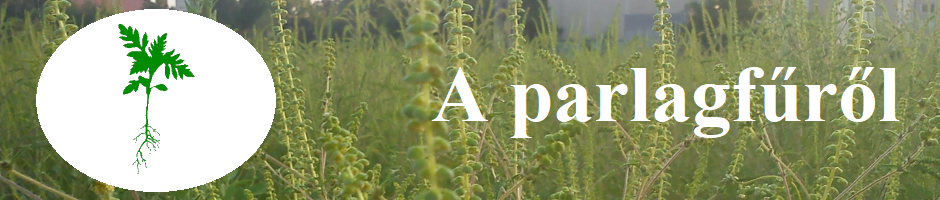

|  |
|---|
A növényrőlA parlagfű (Ambrosia artemisiifolia) kétszikű, 20–140 cm magas, terebélyes, ágas egyéves gyom. Központi egyenes, tompa négy élű szárral rendelkezik, amelynek sűrű oldalhajtásai vannak. A talajhoz közeli néhány cm-es részen 2-3 elágazása is lehetséges. Magassága változatos, a kifejlett növény zárt és magas növénykultúrában, kukorica- vagy napraforgótáblákban a 150 cm magasságot is elérheti. Levelei 1 vagy 2-szeresen szárnyasan szeldeltek, kétoldalt sűrűn szőrözöttek. A szőrök a levél fonákján hosszabbak. A levél színe sötétzöld, fonákja szürkészöld. A sárga színű 4–5 mm-es porzós fészkek, a legfelső hajtások végén, rövid kocsányon ülnek. A fészkek 10-15 virágot tartalmaznak. Virágpora súlyos allergiát okoz. A termős virágok a porzósok alatti legközelebbi levél hónaljában találhatóak. Termése 2–4 mm hosszú, szürke, szív alakú. Egy fogazott burok takarja a termő részt, amely az érés után a terméssel együtt lehullik. A virágok aránya a növényzet sűrűsége szerint változik. Ritka állományban inkább a termős, sűrű állományban a porzós virágok dominálnak. Igénytelen. Nagy növekedési, szaporodási erélye révén könnyen felülkerekedik más növényeken. |